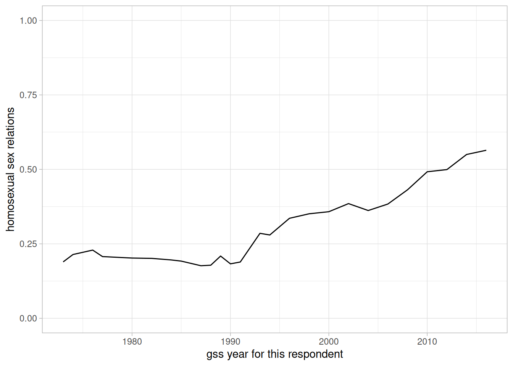
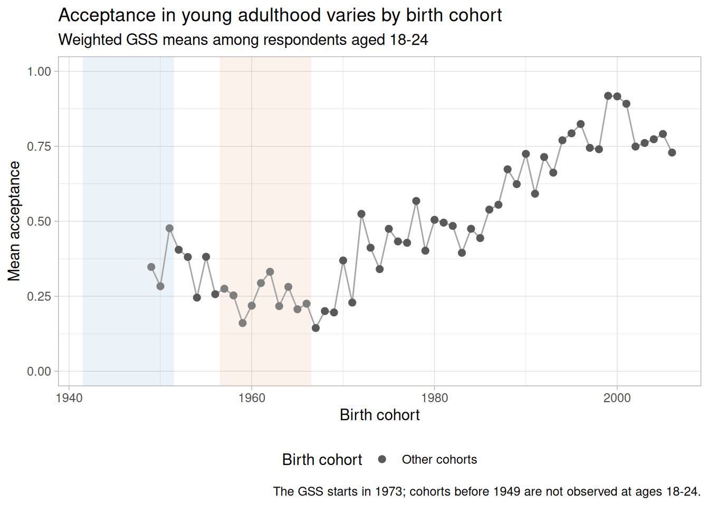
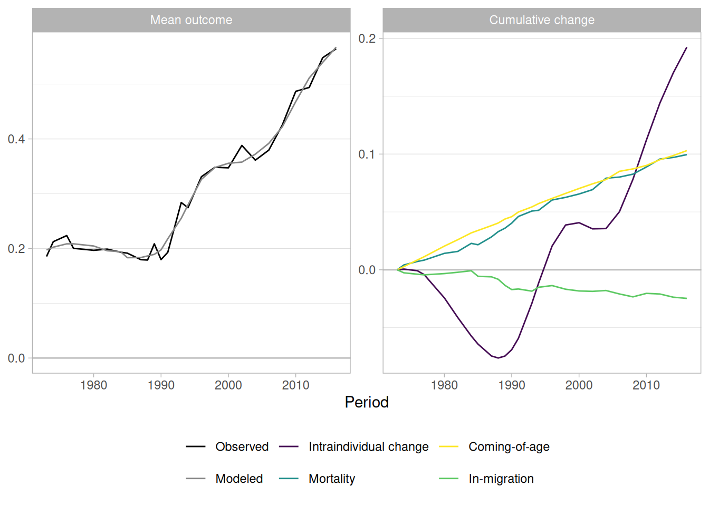
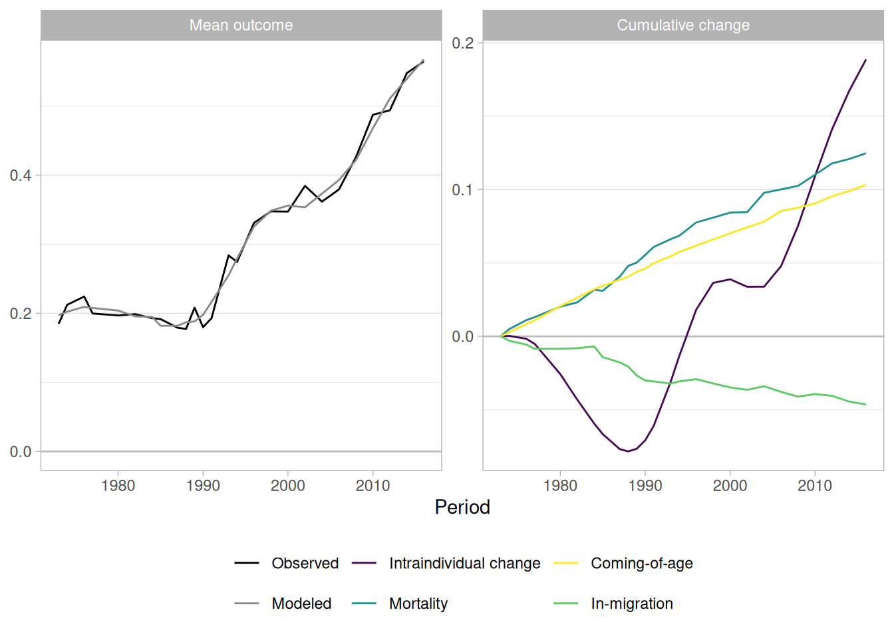
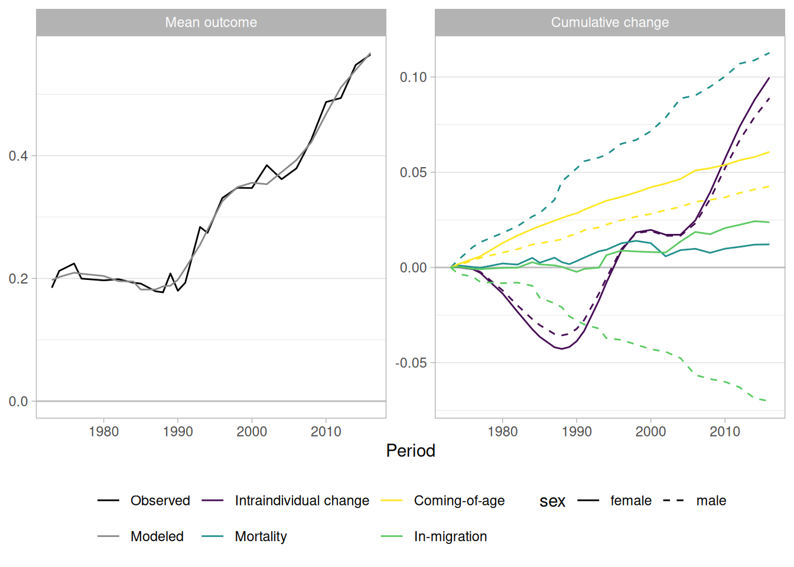
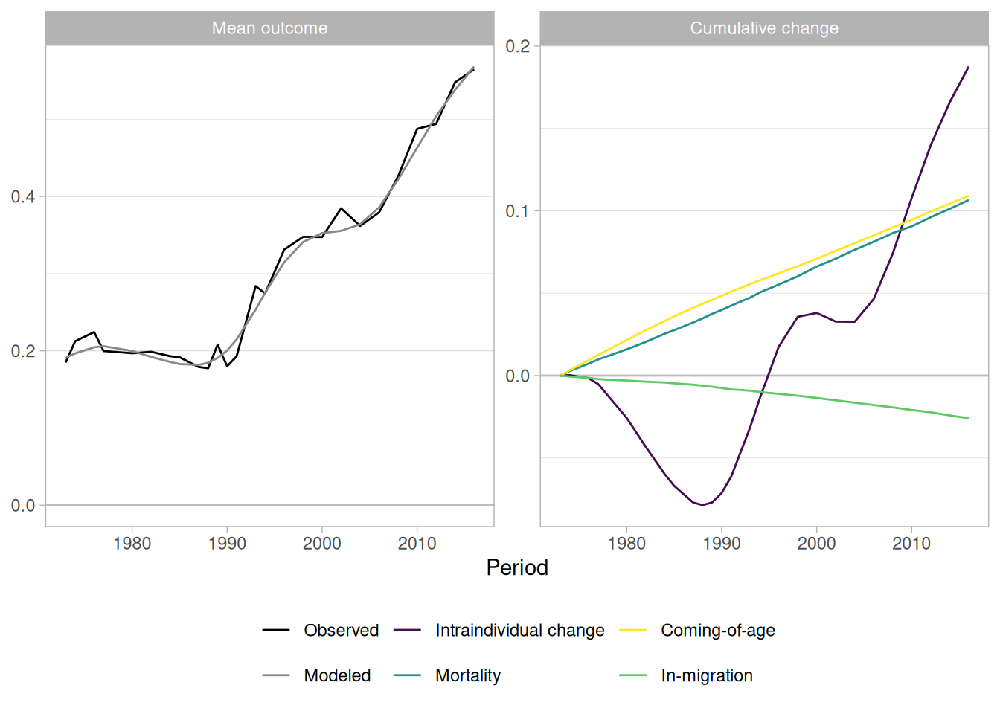
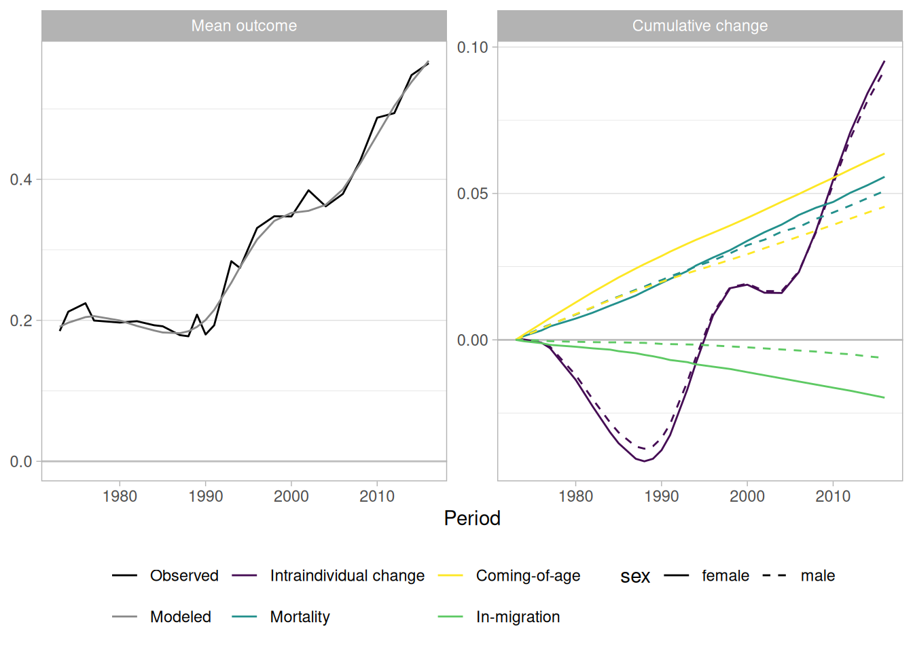

library("socialchange")
library("modelsummary")
library("ggplot2")
library("mgcv")
data(gss_homosex)Decomposing General Social Survey data: Attitudes on Homosexuality
Source:vignettes/gss_homosexuality.qmd
The package includes a dataset gss_homosex, covering General Social Survey data on attitudes towards homosexuality in the U.S. This data was also analyzed in Ekstam (2021).
Packages
Descriptives
The homosex outcome is rescaled to [0, 1], where 0 means “always wrong” and 1 means “not wrong at all”. The table below gives summary statistics; the line plot shows a clear upward trend in acceptance over the survey period.
# compare to Table 1 in Ekstam -- roughly similar
modelsummary::datasummary(
homosex + year + cohort + age + educ ~ mean + SD + min + max,
data = gss_homosex, output = "markdown", fmt = 3)| mean | SD | min | max | |
|---|---|---|---|---|
| homosexual sex relations | 0.315 | 0.436 | 0.000 | 1.000 |
| gss year for this respondent | 1993.803 | 12.928 | 1973.000 | 2016.000 |
| cohort | 1947.852 | 20.826 | 1892.000 | 1995.000 |
| age of respondent | 45.950 | 17.485 | 18.000 | 89.000 |
| highest year of school completed | 12.835 | 3.171 | 0.000 | 20.000 |
# sex and race are categorical, so show their level breakdown instead
modelsummary::datasummary(
sex + race ~ N + Percent(),
data = gss_homosex, output = "markdown", fmt = 1)| N | Percent | ||
|---|---|---|---|
| sex | female | 19403 | 55.3 |
| male | 15703 | 44.7 | |
| race | black | 4460 | 12.7 |
| other | 1836 | 5.2 | |
| white | 28810 | 82.1 |
by_year <- gss_homosex[, list(y = weighted.mean(homosex, wtssall)), by = c("year")]
ggplot(by_year, aes(x = year, y = y)) + geom_line() + ylim(0, 1) + theme_light()
To separate period and cohort effects, we fit a GAM with a two-dimensional smooth over survey year and birth cohort. The 3D surface and the contour plot below both shows that acceptance increased more strongly among younger cohorts and in later periods.
CR-IC decomposition
The cr_ic() function implements four methods for separating intracohort change (IC) from cohort replacement (CR): algebraic decomposition (AD), linear decomposition (LD), and two model-based improvements (AD+ and Model). For a detailed explanation of each method, including a replication of Firebaugh (1989), see the Replications: Firebaugh vignette.
Acceptance rose by about 43 percentage points between 1973 and 2018 (from 0.19 to 0.62). Using the full panel, the two model-based methods both attribute the larger share to intracohort change, though they differ on the exact split: AD+ gives roughly 63% intracohort change and 37% cohort replacement, while the Model method gives roughly 56% and 44%.
# complete period
form <- homosex ~ as.factor(year) + as.factor(cohort)
(res <- cr_ic(gss_homosex, homosex ~ year + cohort, weight = "wtssall", model = form))
#> Cohort decomposition (year-over-year) with 26 periods:
#> 1973, 1974, 1976, 1977, 1980, 1982, 1984, 1985, 1987, 1988, 1989, 1990, 1991, 1993, 1994, 1996, 1998, 2000, 2002, 2004, 2006, 2008, 2010, 2012, 2014, 2016
#>
#> Summary for entire period:
#> 1973 2016 Difference
#> <num> <num> <num>
#> 0.1893911 0.5642217 0.3748306
#>
#> Decompositions:
#> method factor value %
#> <char> <char> <num> <num>
#> LD total 0.3748306 100.00000
#> LD IC 0.2062929 55.03632
#> LD CR 0.1685376 44.96368
#> LD resid 0.0000000 NA
#> AD total 0.3748306 100.00000
#> AD IC 0.2422175 64.62053
#> AD CR 0.1326131 35.37947
#> AD resid 0.0000000 NA
#> AD+ total 0.3748306 100.00000
#> AD+ IC 0.2379691 63.48710
#> AD+ CR 0.1368615 36.51290
#> AD+ resid 0.0000000 NA
#> Model total 0.3748306 100.00000
#> Model IC 0.2047557 54.62619
#> Model CR 0.1700749 45.37381
#> Model resid 0.0000000 NA
plot(res)
When only the first and last survey years are used, the balance shifts slightly toward cohort replacement (~54% CR, ~46% IC). This illustrates how the choice of time points can affect decomposition results, and why the model-based AD+ and Model methods are preferred over the simpler AD.
# only beginning and end year (also compare to Baunach 2011)
form <- homosex ~ as.factor(year) + splines::bs(cohort, 10)
(res <- cr_ic(gss_homosex[year %in% c(min(year), max(year))], homosex ~ year + cohort, weight = "wtssall", model = form))
#> Cohort decomposition (year-over-year) with 2 periods:
#> 1973, 2016
#>
#> Summary for entire period:
#> 1973 2016 Difference
#> <num> <num> <num>
#> 0.1893911 0.5642217 0.3748306
#>
#> Decompositions:
#> method factor value %
#> <char> <char> <num> <num>
#> LD total 0.3748306 100.00000
#> LD IC 0.1549435 41.33694
#> LD CR 0.2198871 58.66306
#> LD resid 0.0000000 NA
#> AD total 0.3748306 100.00000
#> AD IC 0.0764078 20.38462
#> AD CR 0.2984228 79.61538
#> AD resid 0.0000000 NA
#> AD+ total 0.3748306 100.00000
#> AD+ IC 0.1923286 51.31080
#> AD+ CR 0.1825020 48.68920
#> AD+ resid 0.0000000 NA
#> Model total 0.3748306 100.00000
#> Model IC 0.1961770 52.33750
#> Model CR 0.1786536 47.66250
#> Model resid 0.0000000 NAEvent-based decomposition
The decompose_aggregated() function separates change in the aggregate outcome into intraindividual change (attitude shifts within respondents already in the population) and population turnover (mortality and coming-of-age effects). We rename year and homosex to the column names the function expects, then pass the full dataset directly.
# decompose_aggregated() requires every wave to share a common minimum age. The
# 2014 and 2016 waves sampled no one under 19 and 21 respectively, so we restrict
# to age >= 21 to give all waves the same minimum age.
gss_all <- gss_homosex[age >= 21, .(age, period = year, sex, y = homosex, wtssall)]We fit a GAM to the individual responses to model acceptance as a smooth function of age and period.
The simplest decomposition
We can run the simplest case of the event decomposition with the following commmand:
result <- decompose_aggregated(gss_all, predict_y, weight = "wtssall")
print(result, detailed = FALSE)
#> Component Value Percent
#> At initial (modeled) 0.19738
#> At end (modeled) 0.56751
#> Total change 0.37013 100.0
#> - Intraindividual change 0.19236 52.0
#> - Population turnover 0.17777 48.0
#> - Mortality 0.09952 26.9
#> - Coming-of-age 0.10297 27.8
#> - In-migration -0.02472 -6.7This decomposition compares cells across years, attributing shrinking cohorts to mortality and the youngest cohorts to coming-of-age. Every change in a cell’s size must be attributed to some demographic event — the decomposition never leaves a residual — so a survivor cohort that grows between two waves is credited to net in-migration. With only the survey to work from, this in-migration term (about −0.025, or −7% of the total change) largely reflects sampling fluctuation in cell sizes across waves rather than genuine immigration. It becomes meaningful only once a true population frame is supplied (see below), where a growing cohort really does signal net immigration.
Of the roughly 37 percentage point rise in acceptance between 1973 and 2016, the decomposition attributes about 52% to intraindividual change and 48% to population turnover (mortality of older, less accepting cohorts; coming-of-age of younger, more accepting ones; and a small net in-migration term). This is close to, though slightly above, the range spanned by the CR-IC model-based methods above (37–44% turnover).
plot(result)
What is most interesting about these results is how the components behave over time. Until the early-to-mid 1990s, intraindividual change and population turnover offset each other, leaving the aggregate mean roughly flat. The mean even dipped in the mid-1980s, falling from about 0.21 in 1977 to 0.18 in 1987, as the existing members of the population became less accepting of homosexuality. Turnover pulled the mean back up over the same period, so that by the early 1990s acceptance had barely moved from its 1973 level. Only from the mid-1990s did intraindividual change start to contribute toward acceptance, and from that point on it became the main driver of the rising trend. Turnover contributed in the positive direction throughout. Mortality of older, less accepting cohorts had a much stronger effect than the coming-of-age of younger ones, likely because new members of the population are already closer to the population mean.
One speculative reading of the early decline in intraindividual acceptance is the backlash associated with the AIDS epidemic of the 1980s. The decomposition itself cannot establish this, but it does isolate a within-person decline that is invisible in the raw trend line.
Adding a covariate
We can split the population into covariate cells with the cells argument. Adding sex lets the outcome model predict differently for men and women, and — more consequentially for the decomposition — derives the demographic events (mortality, coming-of-age, migration) separately within each sex cell rather than from the pooled age structure.
model <- mgcv::gam(y ~ s(age) + s(period) + sex, data = gss_all, weights = wtssall)
predict_y <- function(newdata) as.vector(mgcv::predict.gam(model, newdata = newdata))
set.seed(42)
result <- decompose_aggregated(gss_all, predict_y, cells = "sex", weight = "wtssall")
print(result, detailed = FALSE)
#> Component Value Percent
#> At initial (modeled) 0.19732
#> At end (modeled) 0.56757
#> Total change 0.37025 100.0
#> - Intraindividual change 0.18867 51.0
#> - Population turnover 0.18158 49.0
#> - Mortality 0.12478 33.7
#> - Coming-of-age 0.10323 27.9
#> - In-migration -0.04643 -12.5
plot(result)
The headline split is essentially unchanged from the pooled model (~51% intraindividual change, ~49% turnover): conditioning on sex barely moves the population-weighted mean, because the sex composition is roughly stable across waves.
What the covariate also adds is an attribution of every component to the cells that produced it. Passing covariate = "sex" to print() or plot() splits each row into the contribution of each sex to the overall change. The split is fully additive, so this is a genuine decomposition of the aggregate change.
print(result, detailed = FALSE, covariate = "sex")
#> Component Value Percent female male
#> At initial (modeled) 0.19732
#> At end (modeled) 0.56757
#> Total change 0.37025 100.0 0.19629 0.17396
#> - Intraindividual change 0.18867 51.0 0.09976 0.08892
#> - Population turnover 0.18158 49.0 0.09653 0.08504
#> - Mortality 0.12478 33.7 0.01211 0.11267
#> - Coming-of-age 0.10323 27.9 0.06067 0.04257
#> - In-migration -0.04643 -12.5 0.02376 -0.07020
plot(result, covariate = "sex")
Reading down the columns, women and men contribute almost equally to both intraindividual change (0.100 vs 0.089) and total turnover (0.097 vs 0.085), tracking their roughly equal population shares; women contribute somewhat more overall (0.196 vs 0.174 of the 0.370 total rise).
The interesting structure is within turnover, and it comes with a caveat. Almost the entire mortality contribution loads onto men (0.113 vs 0.012 for women), offset by a large negative male in-migration term (−0.070 vs +0.024). This asymmetry should not be read demographically. Recall that on survey data each survivor cohort’s net change in size across waves is routed in its entirety to mortality if the cohort shrank or to in-migration if it grew (the decomposition never leaves a residual). Splitting the already-noisy survey cells by sex halves the counts and amplifies that sampling fluctuation, so the division of turnover between mortality and migration within each sex is largely an artifact of survey cell-size noise. This situation can be improving by adding a population frame.
Adding a population frame
So far the cell counts n have come from the survey itself, so the demographic events are inferred from the noisy survey cell sizes across waves. When true population counts are available, the population argument lets the survey supply only the outcome model fun_y, while an external frame supplies the cell counts that drive the demographic events.
The package ships wpp_us, US population by age and sex from the UN World Population Prospects for each survey year. Only the relative cell structure matters, so we rescale each wave to a tractable per-period total before passing it in.
data(wpp_us)
survey_years <- sort(unique(gss_all$period))
pop <- wpp_us[period %in% survey_years]
scale_total <- round(mean(gss_all[, .N, by = period]$N))
pop[, n := n / sum(n) * scale_total, by = period]
set.seed(42)
result <- decompose_aggregated(gss_all, predict_y, cells = "sex",
weight = "wtssall", population = pop)
print(result, detailed = FALSE)
#> Component Value Percent
#> At initial (modeled) 0.19095
#> At end (modeled) 0.56823
#> Total change 0.37727 100.0
#> - Intraindividual change 0.18753 49.7
#> - Population turnover 0.18974 50.3
#> - Mortality 0.10655 28.2
#> - Coming-of-age 0.10911 28.9
#> - In-migration -0.02592 -6.9
plot(result)
The intraindividual/turnover split is again similar (roughly 50/50), but the turnover detail now reflects real demographics: mortality falls and the net in-migration term shrinks toward zero (from about −0.046 to −0.026), because the smoother true US age structure strips out much of the cell-size noise that the survey counts introduced, leaving net in-migration as a genuine signal of immigration rather than survey noise.
The clearest payoff shows up in the per-sex breakdown, which we can compare directly with the survey-counts version above.
print(result, detailed = FALSE, covariate = "sex")
#> Component Value Percent female male
#> At initial (modeled) 0.19095
#> At end (modeled) 0.56823
#> Total change 0.37727 100.0 0.19490 0.182376
#> - Intraindividual change 0.18753 49.7 0.09531 0.092217
#> - Population turnover 0.18974 50.3 0.09958 0.090158
#> - Mortality 0.10655 28.2 0.05568 0.050866
#> - Coming-of-age 0.10911 28.9 0.06364 0.045468
#> - In-migration -0.02592 -6.9 -0.01974 -0.006175
plot(result, covariate = "sex")
The mortality contribution, which the survey cells had loaded almost entirely onto men (0.012 for women vs 0.113 for men), now splits roughly evenly (0.056 vs 0.051) once real population counts drive the events. The large offsetting male in-migration term collapses to a small, plausibly-signed net term for both sexes, although female in-migration still contributes significantly more compared to male in-migration. The stable quantities barely move, confirming that the earlier male-mortality / female-migration pattern was due to small cell counts.
Further reading
For APC analysis of the same gss_homosex dataset, see the APC vignette.